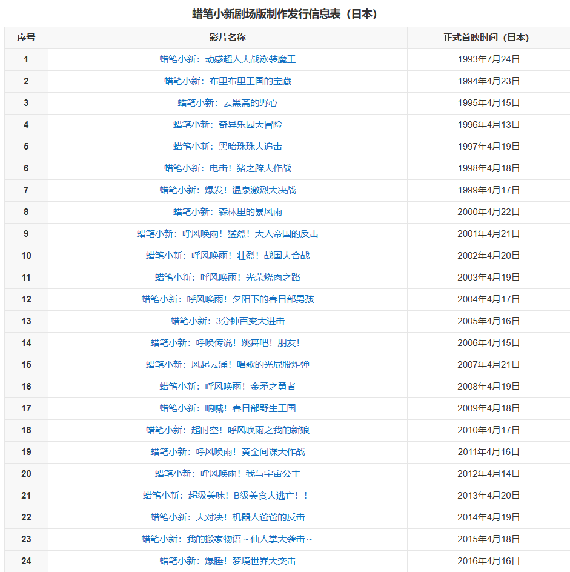

部分电影放映时间
自1993年首播电影上映以来,就是使用赛璐珞制作动画,并且在画面比例上一律为1.85:1(35毫米戏院放映胶片标准),并且使用35毫米胶片拍摄。不过相比电视动画,动画电影早于2000年至今采用电脑描线制作上色的方式制作,并运用在蜡笔小新第10部剧场版《蜡笔小新:呼风唤雨!壮烈!战国大合战》(于2002年上映,不过在2000年开始制作);只是还是将绘制好的电脑动画透过胶片记录仪印在35毫米胶片上,并且于戏院放映。直到第13部剧场版《蜡笔小新:3分钟百变大进击》(2005年及)往后制作上映之电影才完全直接以数码影像技术于戏院放映。
部分奖项
2002年-Nifti电影大奖2002年国产部门作品奖;2003年-东京国际动画节2003优秀导演作品奖;2003年-第二十二届藤本奖激励奖

意义及其影响力
《蜡笔小新》在日本及周边国家和地区迅速窜红不是偶然，其中一个重要的因素，就是通过一个不安世事的小孩不寻常的言行，说出了成人的想说却不敢说的话，做出了成人们想做却不敢做的事，释放了成人们的压力的心理活动，拨动了成年人渴望回归童年，回归自然，回归真实的心弦，引起了大多数观众的强烈共鸣。《蜡笔小新》不仅仅是一个动漫作品，而是一种文化现象，小新也不局限于剧中的角色，而是一个群体的思维。这种现象后面隐藏着该动漫片所折射出来的能够唤起大家共鸣的复杂成人心态至少包括：面对现实生活的深刻无奈、面对杂种文化呈现反传统思维、对他人习惯性，自私，虚伪与狡辩、直面隔代直系溺爱，影响未成年人教育的无助。
人物相册